Transformer_P1_Encoder¶
约 7113 个字 预计阅读时间 24 分钟
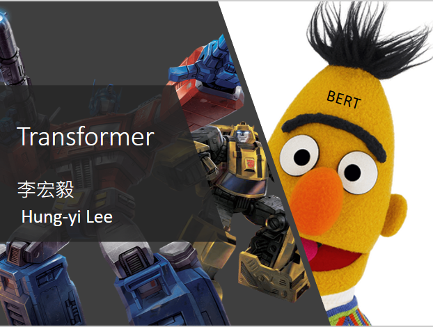
变形金刚的英文就是Transformer，那Transformer也跟我们之后会提到的BERT有非常强烈的关系，所以这边有一个BERT探出头来，代表说Transformer跟BERT是很有关系的
Sequence-to-sequence (Seq2seq)¶
Transformer就是一个 Sequence-to-sequence 的model，他的缩写，我们会写做 Seq2seq，那Sequence-to-sequence的model，又是什么呢
我们之前在讲input a sequence的，case的时候，我们说input是一个sequence，那output有几种可能
- 一种是input跟output的长度一样，这个是在作业二的时候做的
- 有一个case是output只output一个东西，这个是在作业四的时候做的
-
那接来作业五的case是我们不知道应该要output多长，由机器自己决定output的长度，即Seq2seq
-
举例来说，Seq2seq一个很好的应用就是 语音辨识
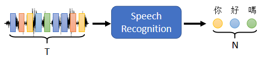
在做语音辨识的时候，输入是声音讯号，声音讯号其实就是一串的vector，输出是语音辨识的结果，也就是输出的这段声音讯号所对应的文字
我们这边用圈圈来代表文字，每一个圈圈就代表，比如说中文里面的一个方块子，今天输入跟输出的长度，当然是有一些关系，但是却没有绝对的关系，输入的声音讯号，他的长度是大T，我们并没有办法知道说，根据大T输出的这个长度N一定是多少。
输出的长度由机器自己决定，由机器自己去听这段声音讯号的内容，自己决定他应该要输出几个文字，他输出的语音辨识结果，输出的句子里面应该包含几个字，由机器自己来决定，这个是语音辨识
-
还有很多其他的例子，比如说作业五我们会做机器翻译
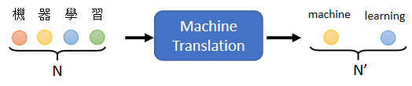
让机器读一个语言的句子，输出另外一个语言的句子，那在做机器翻译的时候，输入的文字的长度是N，输出的句子的长度是N'，那N跟N'之间的关系，也要由机器自己来决定
输入机器学习这个句子，输出是machine learning，输入是有四个字，输出有两个英文的词汇，但是并不是所有中文跟英文的关系，都是输出就是输入的二分之一，到底输入一段句子，输出英文的句子要多长，由机器自己决定
-
甚至可以做更复杂的问题，比如说做语音翻译
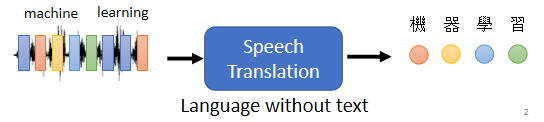
语音翻译就是，你对机器说一句话，比如说machine learning，他输出的不是英文，他直接把他听到的英文的声音讯号翻译成中文文字
你对他说machine learning，他输出的是机器学习
为什么我们要做Speech Translation这样的任务，为什么我们不直接先做一个语音辨识，再做一个机器翻译，把语音辨识系统跟机器翻译系统，接起来就直接是语音翻译？
因为世界上有很多语言，他根本连文字都没有，世界上有超过七千种语言，那其实在这七千种语言，有超过半数其实是没有文字的，对这些没有文字的语言而言，你要做语音辨识，可能根本就没有办法，因为他没有文字，所以你根本就没有办法做语音辨识，但我们有没有可能对这些语言，做语音翻译，直接把它翻译成，我们有办法阅读的文字
Hokkien（闽南语、台语）¶
一个很好的例子也许就是，台语的语音辨识，但我不会说台语没有文字，很多人觉得台语是有文字的，但台语的文字并没有那么普及，现在听说小学都有教台语的文字了，但台语的文字，并不是一般人能够看得懂的
如果你做语音辨识，你给机器一段台语，然后它可能输出是母汤，你根本就不知道，这段话在说什么。

所以我们期待说机器也许可以做语音的翻译，对它讲一句台语，它直接输出的是同样意思的，中文的句子，那这样一般人就可以看懂

我们可以训练一个类神经网络，这个类神经网络听某一种语言，的声音讯号，输出是另外一种语言的文字。
今天你要训练一个neural network，你就需要有input跟output的配合，你需要有台语的声音讯号，跟中文文字的对应关系，那这样的资料是比较容易收集的。比如说YouTube上面，有很多的乡土剧

乡土剧就是，台语语音 中文字幕，所以你只要它的台语语音载下来，中文字幕载下来，你就有台语声音讯号，跟中文之间的对应关系，你就可以train一个模型，然后叫机器直接做台语的语音辨识，输入台语 输出中文
那你可能会觉得这个想法很狂，而且好像听起来有很多很多的问题，那我们实验室就载了一千五百个小时的乡土剧的资料，然后就真的拿来训练一个，语音辨识系统
你可能会觉得说，这听起来有很多的问题
- 乡土剧有很多杂讯，有很多的音乐，不要管它这样子
- 乡土剧的字幕，不一定跟声音有对起来，就不要管它这样子
- 台语还有一些，比如说台罗拼音，台语也是有类似音标这种东西，也许我们可以先辨识成音标，当作一个中介，然后在从音标转成中文，也没有这样做

直接训练一个模型，输入是声音讯号，输出直接就是中文的文字，这种没有想太多 直接资料倒进去，就训练一个模型的行为，就叫作 硬train一发
那你可能会想说，这样子硬train一发到底能不能够，做一个台语语音辨识系统呢，其实 还真的是有可能的，以下是一些真正的结果
机器在听的一千五百个小时的，乡土剧以后，你可以对它输入一句台语，然后他就输出一句中文的文字，以下是真正的例子
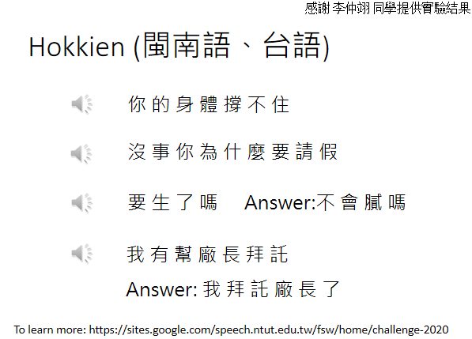
机器听到的声音是这样子的
- 你的身体撑不住(台语)，那机器输出是什么呢，它的输出是 你的身体撑不住，这个声音讯号是你的身体撑不住(台语)，但机器并不是输出无勘，而是它就输出撑不住
- 或者是机器听到的，是这样的声音讯号，没事你为什么要请假(台语)，没事你为什么要请假，机器听到没事(台语)，它并不是输出 没代没志，它是输出 没事，这样听到四个音节没代没志(台语)，但它知道说台语的没代没志(台语)，翻成中文 也许应该输出 没事，所以机器的输出是，没事你为什么要请假
- 但机器其实也是蛮容易犯错的，底下特别找机个犯错的例子，给你听一下，你听听这一段声音讯号，不会腻吗(台语)，他说不会腻吗(台语)，我自己听到的时候我觉得，我跟机器的答案是一样的，就是说要生了吗，但其实这句话，正确的答案就是，不会腻吗(台语)，不会腻吗
- 当然机器在倒装，你知道有时候你从台语，转成中文句子需要倒装，在倒装的部分感觉就没有太学起来，举例来说它听到这样的句子，我有跟厂长拜托(台语)，他说我有跟厂长拜托(台语)，那机器的输出是，我有帮厂长拜托，但是你知道说这句话，其实是倒装，我有跟厂长拜托(台语)，是我拜托厂长，但机器对于它来说，如果台语跟中文的关系需要倒装的话，看起来学习起来还是有一点困难
这个例子想要告诉你说，直接台语声音讯号转繁体中文，不是没有可能，是有可能可以做得到的，那其实台湾有很多人都在做，台语的语音辨识，如果你想要知道更多有关，台语语音辨识的事情的话，可以看一下下面这个网站
Text-to-Speech (TTS) Synthesis¶
台语语音辨识反过来，就是台语的语音合成，我们如果是一个模型，输入台语声音 输出中文的文字，那就是语音辨识，反过来 输入文字 输出声音讯号，就是语音合成
这边就是demo一下台语的语音合成，这个资料用的是，台湾 媠声(台语)的资料，来找GOOGLE台湾媠声(台语)，就可以找到这个资料集，里面就是台语的声音讯号，听起来像是这个样子
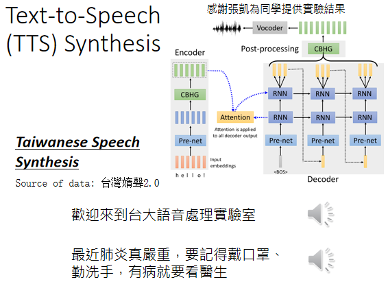
比如说你跟它说，欢迎来到台湾台大语音处理实验室
不过这边是需要跟大家说明一下，现在还没有真的做End to End的模型，这边模型还是分成两阶，他会先把中文的文字，转成台语的台罗拼音，就像是台语的KK音标，在把台语的KK音标转成声音讯号，不过从台语的KK音标，转成声音讯号这一段，就是一个像是Transformer的network，其实是一个叫做echotron的model，它本质上就是一个Seq2Seq model，大概长的是这个样子
所以你输入文字，欢迎来到台大语音处理实验室，机器的输出是这个样子的，欢迎来到台大(台语)，语音处理实验室(台语)，或是你对他说这一句中文，然后他输出的台语是这个样子，最近肺炎真严重(台语)，要记得戴口罩 勤洗手(台语)，有病就要看医生(台语)
所以你真的是可以，合出台语的声音讯号的，就用我们在这一门课里面学到的，Transformer或者是Seq2Seq的model
Seq2seq for Chatbot¶
刚才讲的是跟语音比较有关的，那在文字上，也会很广泛的使用了Seq2Seq model
举例来说你可以用Seq2Seq model，来训练一个聊天机器人
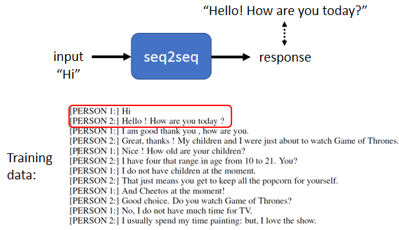
聊天机器人就是你对它说一句话，它要给你一个回应，输入输出都是文字，文字就是一个vector Sequence，所以你完全可以用Seq2Seq 的model，来做一个聊天机器人
你就要收集大量人的对话，像这种对话你可以收集，电视剧 电影的台词 等等，你可以收集到，一堆人跟人之间的对话
假设在对话里面有出现，某一个人说Hi，和另外一个人说，Hello How are you today，那你就可以教机器说，看到输入是Hi，那你的输出就要跟，Hello how are you today，越接近越好
那就可以训练一个Seq2Seq model，那跟它说一句话，它就会给你一个回应
Question Answering (QA)¶
那事实上Seq2Seq model，在NLP的领域，在natural language processing的领域的使用，是比你想象的更为广泛，其实很多natural language processing的任务，都可以想成是 question answering，QA 的任务
Question Answering，就是给机器读一段文字，然后你问机器一个问题，希望他可以给你一个正确的答案
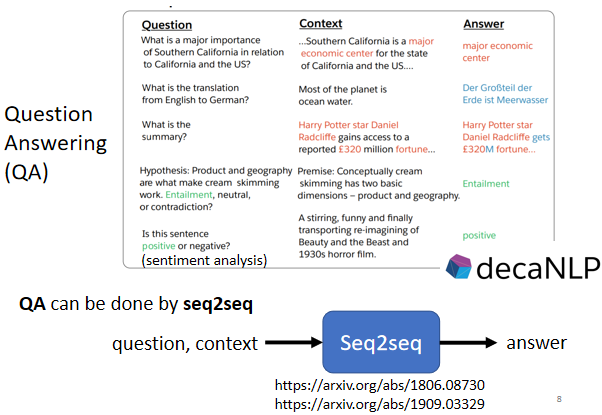
- 假设你今天想做的是翻译，那机器读的文章就是一个英文句子，问题就是这个句子的德文翻译是什么，然后输出的答案就是德文
- 或者是你想要叫机器自动作摘要，摘要就是给机器读一篇长的文章，叫他把长的文章的重点节录出来，那你就是给机器一段文字，问题是这段文字的摘要是什么，然后期待他答案可以输出一个摘要
- 或者是你想要叫机器做Sentiment analysis，Sentiment analysis就是机器要自动判断一个句子，是正面的还是负面的；假设你有做了一个产品，然后上线以后，你想要知道网友的评价，但是你又不可能一直找人家ptt上面，把每一篇文章都读过，所以就做一个Sentiment analysis model，看到有一篇文章里面，有提到你的产品，然后就把这篇文章丢到，你的model里面，去判断这篇文章，是正面还是负面。你就给机器要判断正面还负面的文章，问题就是这个句子，是正面还是负面的，然后希望机器可以告诉你答案
所以各式各样的NLP的问题，往往都可以看作是QA的问题，而QA的问题，就可以用Seq2Seq model来解
具体来说就是有一个Seq2Seq model输入，就是有问题跟文章把它接在一起，输出就是问题的答案，就结束了，你的问题加文章合起来，是一段很长的文字，答案是一段文字
Seq2Seq model只要是输入一段文字，输出一段文字，只要是输入一个Sequence，输出一个Sequence就可以解，所以你可以把QA的问题，硬是用Seq2Seq model解，叫它读一篇文章读一个问题，然后就直接输出答案，所以各式各样NLP的任务，其实都有机会使用Seq2Seq model
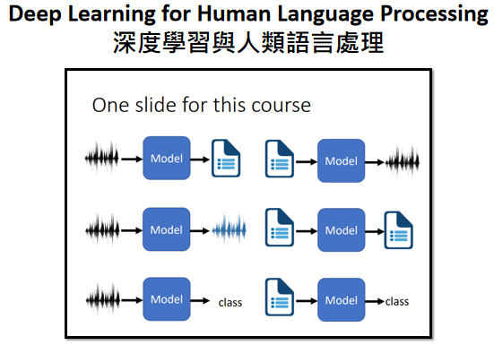
必须要强调一下，对多数NLP的任务，或对多数的语音相关的任务而言，往往为这些任务客制化模型，你会得到更好的结果
但是各个任务客制化的模型，就不是我们这一门课的重点了，如果你对人类语言处理，包括语音 包括自然语言处理，这些相关的任务有兴趣的话呢，可以参考一下以下课程网页的链接，就是去年上的深度学习，与人类语言处理，这门课的内容里面就会教你，各式各样的任务最好的模型，应该是什么
举例来说在做语音辨识，我们刚才讲的是一个Seq2Seq model，输入一段声音讯号，直接输出文字，今天啊 Google的 pixel4，Google官方告诉你说，Google pixel4也是用，N to N的Neural network，pixel4里面就是，有一个Neural network，输入声音讯号，输出就直接是文字
但他其实用的不是Seq2Seq model，他用的是一个叫做，RNN transducer的 model，像这些模型他就是为了，语音的某些特性所设计，这样其实可以表现得更好，至于每一个任务，有什么样客制化的模型，这个就是另外一门课的主题，就不是我们今天想要探讨的重点
Seq2seq for Syntactic Parsing¶
在语音还有自然语言处理上的应用，其实有很多应用，你不觉得他是一个Seq2Seq model的问题，但你都可以硬用Seq2Seq model的问题硬解他
举例来说文法剖析，给机器一段文字，比如Deep learning is very powerful
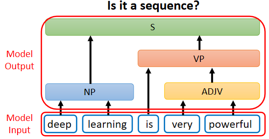
机器要做的事情是产生，一个文法的剖析树告诉我们，deep加learning合起来，是一个名词片语，very加powerful合起来，是一个形容词片语，形容词片语加is以后会变成一个动词片语，动词片语加名词片语合起来是一个句子
那今天文法剖析要做的事情，就是产生这样子的一个Syntactic tree，所以在文法剖析的任务里面，假设你想要deep learning解的话，输入是一段文字，他是一个Sequence，但输出看起来不像是一个Sequence，输出是一个树状的结构，但事实上一个树状的结构，可以硬是把他看作是一个Sequence
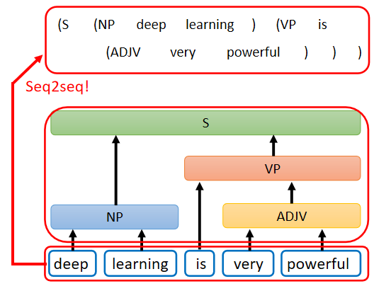
这个树状结构可以对应到一个，这样子的Sequence，从这个Sequence里面，你也可以看出
- 这个树状的结构有一个S，有一个左括号，有一个右括号
- S里面有一个noun phrase，有一个左括号跟右括号
- NP里面有一个左括号跟右括号，NP里面有is
- 然后有这个形容词片语，他有一个左括号右括号
这一个Sequence就代表了这一个tree 的structure，你先把tree 的structure，转成一个Sequence以后，你就可以用Seq2Seq model硬解他
train一个Seq2Seq model，读这个句子，然后直接输入这一串文字，再把这串文字转成一个树状的结构，你就可以硬是用Seq2Seq model，来做文法剖析这件事，这个概念听起来非常的狂，但这是真的可以做得到的，
你可以读一篇文章叫做，grammar as a Foreign Language
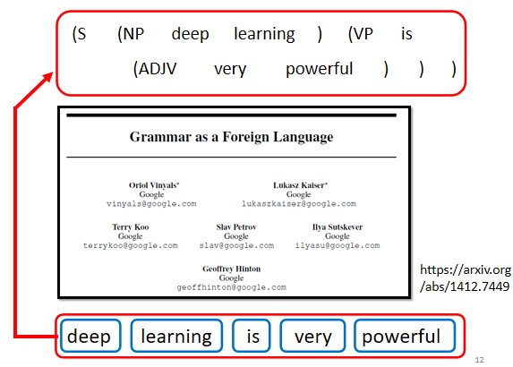
这篇文章其实不是太新的文章，你会发现她放在arxiv上面的时间是14年的年底，所以其实也是一个上古神兽等级的文章，这篇文章问世的时候，那个时候Seq2Seq model还不流行，那时候Seq2Seq model主要只有被用在翻译上，所以这篇文章的title才会去说grammar as a Foreign Language
他把文法剖析这件事情当作是一个翻译的问题，把文法当作是另外一种语言，直接套用当时人们认为只能用在翻译上的模型硬做，结果他得到state of the art的结果
我(李宏毅老师)其实在国际会议的时候，有遇过这个第一作者Oriol Vlnyals，那个时候Seq2Seq model，还是个非常潮的东西，那个时候在我的认知里面，我觉得这个模型，应该是挺难train的，我问他说，train Seq2Seq model有没有什么tips，没想到你做个文法剖析，用Seq2Seq model，居然可以硬做到state of the art，这应该有什么很厉害的tips吧
他说什么没有什么tips，他说我连Adam都没有用，我直接gradient descent，就train起来了，我第一次train就成功了，只是我要冲到state of the art，还是稍微调了一下参数而已，我也不知道是真的还假的啦，不过今天Seq2Seq model，真的是已经被很广泛地应用在各式各样的应用上了
multi-label classification¶
还有一些任务可以用seq2seq's model，举例来说 multi-label的classification
multi-class 的classification，跟 multi-label 的classification，听起来名字很像，但他们其实是不一样的事情，multi-class的classification意思是说，我们有不只一个class机器要做的事情，是从数个class里面，选择某一个class出来
但是multi-label的classification，意思是说同一个东西，它可以属于多个class，举例来说 你在做文章分类的时候
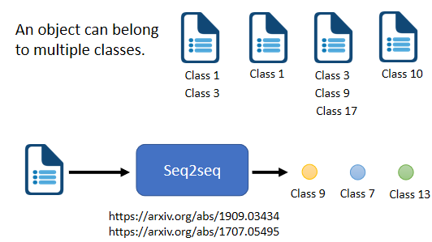
可能这篇文章 属于class 1跟3，这篇文章属于class 3 9 17等等，你可能会说，这种multi-label classification的问题，能不能直接把它当作一个multi-class classification的问题来解
举例来说，我把这些文章丢到一个classifier里面
- 本来classifier只会输出一个答案，输出分数最高的那个答案
- 我现在就输出分数最高的前三名，看看能不能解，multi-label的classification的问题
但这种方法可能是行不通的，因为每一篇文章对应的class的数目，根本不一样 有些东西 有些文章，对应的class的数目，是两个 有的是一个 有的是三个
所以 如果你说 我直接取一个threshold，我直接取分数最高的前三名，class file output分数最高的前三名，来当作我的输出，显然不一定能够得到好的结果，那怎么办呢？
这边可以用seq2seq硬做，输入一篇文章，输出就是class，就结束了，机器自己决定它要输出几个class
我们说seq2seq model，就是由机器自己决定输出几个东西，输出的output sequence的长度是多少，既然你没有办法决定class的数目，那就让机器帮你决定每篇文章要属于多少个class
Seq2seq for Object Detection¶
或者是object detection，这个看起来跟seq2seq model，应该八竿子打不着的问题，它也可以用seq2seq's model硬解
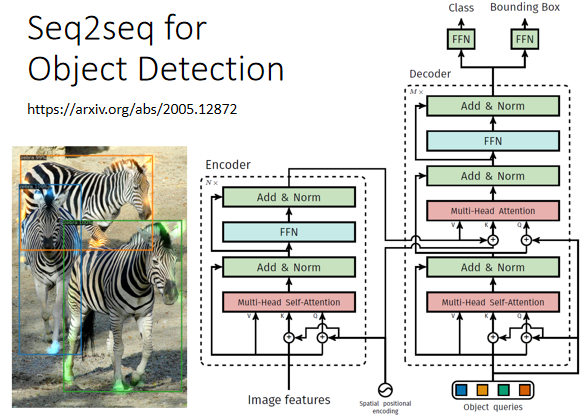
object detection就是给机器一张图片，然后它把图片里面的物件框出来，把它框出说 这个是斑马 这个也是斑马，但这种问题 可以用seq2seq's硬做，至于怎么做 我们这边就不细讲，我在这边放一个文献，放一个链接给大家参考，讲这么多就是要告诉你说，seq2seq's model 它是一个很powerful的model，是一个很有用的model
Encoder-Decoder¶
我们现在就是要来学，怎么做seq2seq这件事。一般的seq2seq's model，它里面会分成两块，一块是Encoder，另外一块是Decoder
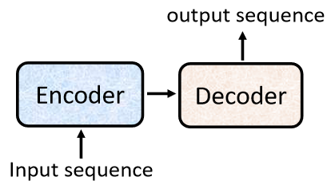
你input一个sequence有Encoder，负责处理这个sequence，再把处理好的结果丢给Decoder，由Decoder决定，它要输出什么样的sequence，等一下我们都还会再细讲Encoder跟Decoder内部的架构
seq2seq model的起源，其实非常的早在14年的9月，就有一篇seq2seq's model用在翻译的文章
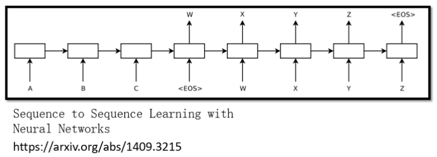
可以想象当时的seq2seq's model看起来还是比较阳春的，今天讲到seq2seq's model的时候，大家第一个会浮现在脑中的，可能都是我们今天的主角，也就是transformer
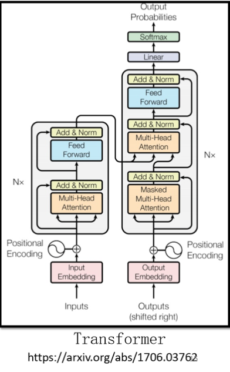
它有一个Encoder架构，有一个Decoder架构，它里面有很多花花绿绿的block，等一下就会讲一下，这里面每一个花花绿绿的block，分别在做的事情是什么
Encoder¶
seq2seq model Encoder 要做的事情，就是给一排向量，输出另外一排向量
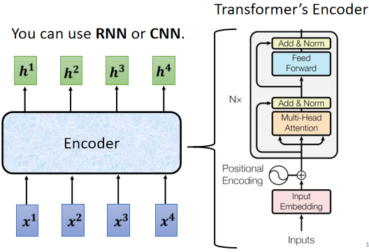
给一排向量、输出一排向量这件事情，很多模型都可以做到，可能第一个想到的是，我们刚刚讲完的self-attention，其实不只self-attention，RNN CNN 其实也都能够做到，input一排向量，output另外一个同样长度的向量
在transformer里面，transformer的Encoder用的就是self-attention，这边看起来有点复杂，我们用另外一张图，来仔细地解释一下，这个Encoder的架构，等一下再来跟原始的transformer的论文里面的图进行比对，
现在的Encoder里面，会分成很多很多的block
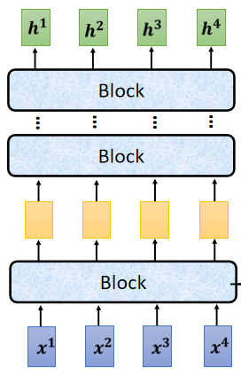
每一个block都是输入一排向量，输出一排向量，你输入一排向量 第一个block，第一个block输出另外一排向量，再输给另外一个block，到最后一个block，会输出最终的vector sequence，每一个block其实并不是neural network的一层
每一个block里面做的事情，是好几个layer在做的事情，在transformer的Encoder里面，每一个block做的事情，大概是这样子的
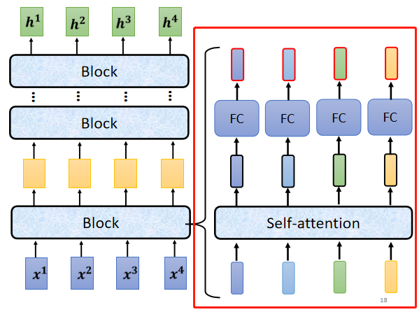
- 先做一个self-attention，input一排vector以后，做self-attention，考虑整个sequence的资讯，Output另外一排vector.
- 接下来这一排vector，会再丢到fully connected的feed forward network里面，再output另外一排vector，这一排vector就是block的输出
事实上在原来的transformer里面做的事情更复杂
在之前self-attention的时候，我们说输入一排vector，就输出一排vector，这边的每一个vector，它是考虑了所有的input以后所得到的结果
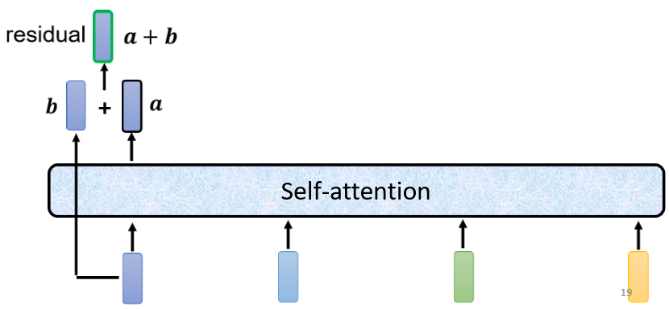
在transformer里面，它加入了一个设计，我们不只是输出这个vector，我们还要把这个vector加上它的input，它要把input拉过来 直接加给输出，得到新的output
也就是说，这边假设这个vector叫做\(a\)，这个vector叫做\(b\) 你要把\(a+b\)当作是新的输出
这样子的network架构，叫做 residual connection，那其实这种residual connection，在deep learning的领域用的是非常的广泛，之后如果我们有时间的话，再来详细介绍，为什么要用residual connection
那你现在就先知道说，有一种network设计的架构，叫做residual connection，它会把input直接跟output加起来，得到新的vector
得到residual的结果以后，再把它做一件事情叫做normalization，这边用的不是batch normalization，这边用的叫做 layer normalization
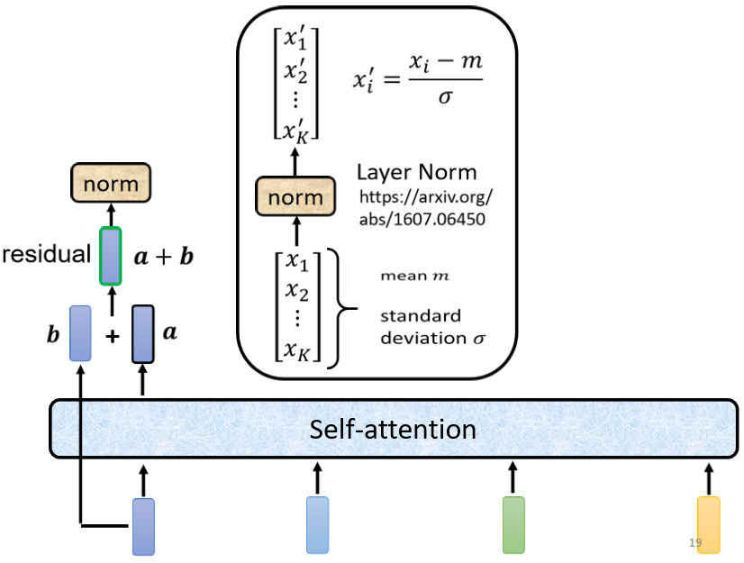
layer normalization做的事情，比bacth normalization更简单一点
输入一个向量 输出另外一个向量，不需要考虑batch，它会把输入的这个向量，计算它的mean跟standard deviation
但是要注意一下，==batch normalization==是对不同example，不同feature的同一个dimension，去计算mean跟standard deviation
但 layer normalization，它是对同一个feature，同一个example里面不同的dimension，去计算mean跟standard deviation
计算出mean，跟standard deviation以后，就可以做一个normalize，我们把input这个vector里面每一个，dimension减掉mean，再除以standard deviation以后得到x'，就是layer normalization的输出 $$ x'_i=\frac{x_i-m}{\sigma} $$ 得到layer normalization的输出以后，它的这个输出才是FC network的输入
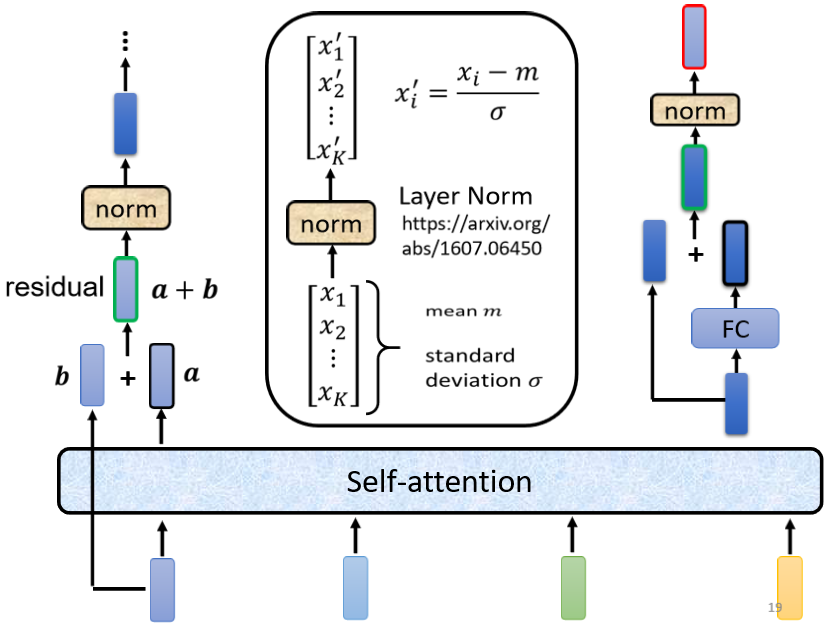
而FC network这边，也有residual的架构，所以 我们会把FC network的input，跟它的output加起来做一下residual，得到新的输出
这个FC network做完residual以后，还不是结束，你要把residual的结果，再做一次layer normalization，得到的输出，才是residual network里面，一个block的输出，所以这个是挺复杂的
所以我们这边讲的这一个图，其实就是我们刚才讲的那件事情
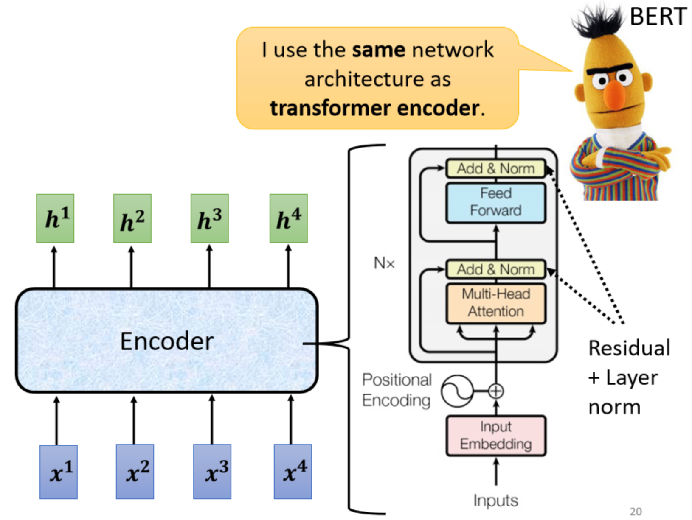
- 首先 你有self-attention，其实在input的地方，还有加上positional encoding，我们之前已经有讲过，如果你只光用self-attention，你没有未知的资讯，所以你需要加上positional的information，然后在这个图上，有特别画出positional的information
- Multi-Head Attention，这个就是self-attention的block，这边有特别强调说，它是Multi-Head的self-attention
- Add&norm，就是residual加layer normalization，我们刚才有说self-attention，有加上residual的connection，加下来还要过layer normalization，这边这个图上的Add&norm，就是residual加layer norm的意思
- 接下来，要过feed forward network
- fc的feed forward network以后再做一次Add&norm，再做一次residual加layer norm，才是一个block的输出，
- 然后这个block会重复n次，这个复杂的block，其实在之后会讲到的一个非常重要的模型BERT里面，会再用到，BERT它其实就是transformer的encoder
To Learn more¶
讲到这边 你心里一定充满了问号，就是为什么 transformer的encoder，要这样设计，不这样设计行不行?
行 不一定要这样设计，这个encoder的network架构，现在设计的方式，本文是按照原始的论文讲给你听的，但原始论文的设计 不代表它是最好的，最optimal的设计
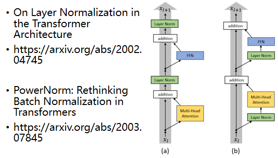
- 有一篇文章叫，on layer normalization in the transformer architecture，它问的问题就是 为什么，layer normalization是放在那个地方呢，为什么我们是先做，residual再做layer normalization，能不能够把layer normalization，放到每一个block的input，也就是说 你做residual以后，再做layer normalization，再加进去 你可以看到说左边这个图，是原始的transformer，右边这个图是稍微把block，更换一下顺序以后的transformer，更换一下顺序以后 结果是会比较好的，这就代表说，原始的transformer 的架构，并不是一个最optimal的设计，你永远可以思考看看，有没有更好的设计方式
- 再来还有一个问题就是，为什么是layer norm 为什么是别的，不是别的，为什么不做batch normalization，也许这篇paper可以回答你的问题，这篇paper是Power Norm：，Rethinking Batch Normalization In Transformers，它首先告诉你说 为什么，batch normalization不如，layer normalization，在Transformers里面为什么，batch normalization不如，layer normalization，接下来在说，它提出来一个power normalization，一听就是很power的意思，都可以比layer normalization，还要performance差不多或甚至好一点
本文总阅读量次